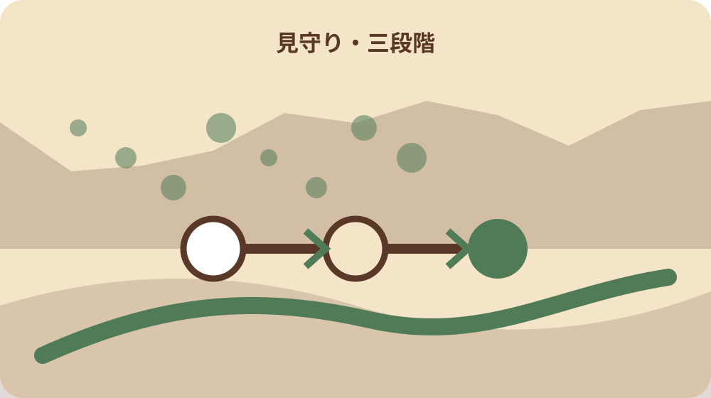
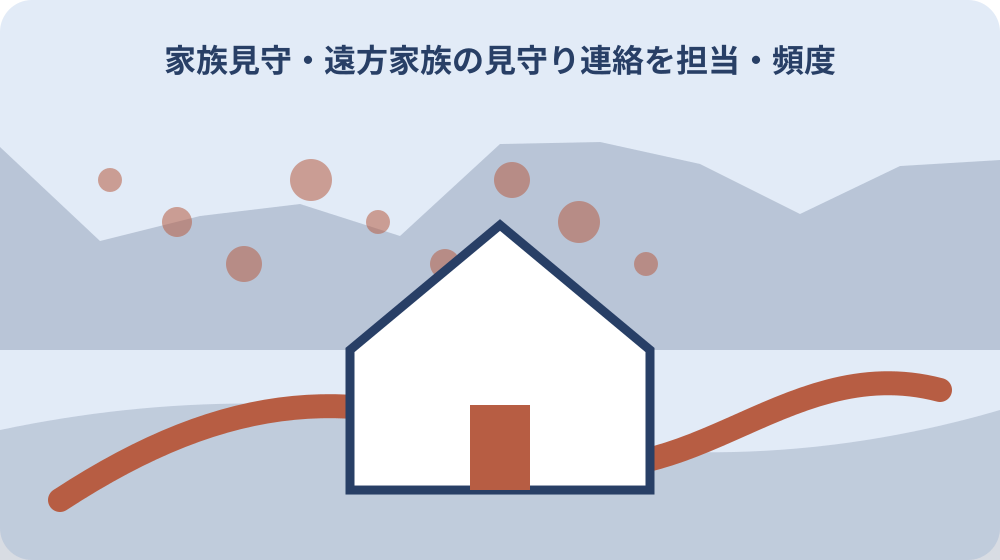

先に結論を確認する
この記事の答え：普段の一日を確認したうえで、定時連絡、生活変化、緊急事態を三段階に分けます。曜日ごとの担当、連絡がない時の再連絡先、近隣確認、地域包括支援センター、119番へ移る条件を一枚にします。
森町で最初に照合する条件：毎日の定時連絡、生活変化の確認、緊急通報を一つの連絡手段へまとめず、担当と発動条件を分ける。
連絡回数より先に普段の一日を共有する
遠方の家族を見守るとき、毎日何回電話するかを先に決めると、出なかった回数だけが問題になります。まず本人の普段の起床、食事、服薬、買物、通院、入浴、就寝を本人と一緒に書き、連絡しやすい時間と外出中の時間を分けます。
普段の一日は曜日で変わります。通院日、デイサービス、地域の集まり、移動販売、家族訪問を一週間の表へ置きます。外出予定を知らずに不在を異変と判断しないよう、予定を知らせる方法も本人が続けられる簡単な形にします。
電話、固定電話、短いメッセージ、訪問のどれが本人に負担が少ないかを試します。新しい端末を導入する前に、聞こえ方、充電、置き場所、操作回数を確認します。使えない道具を置くだけでは安心につながりません。
見守り表には、本人が連絡を休みたい時間も書きます。常に応答を求めると生活が監視されているように感じます。本人が自分で外出や休息を選べる範囲を残し、連絡の目的を安否確認、用事、会話に分けます。
普段の一日には家の設備も加えます。暖房、調理、浴槽、玄関鍵をいつ使うかが分かると、停電や故障時に生活のどこが止まるかを考えられます。機器の稼働だけで本人の安全を断定しません。
定時連絡・生活変化・緊急事態を三段階に分ける
連絡表は三段階にします。第一段階は予定した時刻の短い連絡、第二段階は食事が取れない、薬が余る、郵便がたまるなど生活変化、第三段階は転倒、急病、火災など緊急事態です。段階ごとに連絡先を変えます。
定時連絡に一度出ないことと、明らかな異変を同じ扱いにしません。再連絡までの時間、別端末、近隣協力者へ頼む条件を決めます。本人が昼寝や入浴をしている可能性もあるため、通常の不在を緊急と断定しない仕組みが必要です。
生活変化は一件だけで判断せず、日付と組合せを見ます。冷蔵庫の食品が減らない、同じ話が増える、支払いを忘れる、庭が荒れるといった変化を観察事実として残します。診断名を家族が付けず、相談時に事実を伝えます。
第三段階ではためらわず119番等へ連絡すべき状況があります。意識がない、呼吸がおかしい、火や煙が見えるなど具体的状況を家族内で確認します。緊急性を記事だけで判定せず、迷う場合は現場情報を公的窓口へ伝えます。
三段階ごとに使う情報量も変えます。定時連絡では短い返答で足りても、相談時は数日の変化、緊急時は住所と現場状況が必要です。全情報を毎回聞き出さず、その段階で必要な内容だけを確認します。
連絡がない時の確認順を家族で決める
連絡がない時に全員が同時に電話すると、本人が混乱します。最初の担当者、再連絡までの時間、次に連絡する家族を一列にします。担当者が会議や運転中のときは、何分後に次の人へ移るかも決めます。
本人の当日予定を確認し、通院や買物で外出していないかを見ます。位置情報を常時取得するのではなく、共有カレンダーや紙の予定表など本人が同意した方法を使います。外出先へむやみに問い合わせて個人情報を広げません。
近隣の協力者へ確認を頼む場合は、鍵を開ける権限まで自動で与えません。玄関灯、新聞、車、自宅周囲など外から見える範囲と、家へ入る場合の条件を分けます。鍵の保管者と緊急時の使用条件を書面で確認します。
訪問して反応がなく、急病等が疑われるときは、状況を具体的に通報します。『いつもの電話に出ない』だけでなく、最後に話した時刻、持病、当日の予定、室内の音や灯りを伝えられるよう、連絡表の上部にまとめます。
確認順は本人にも見せます。誰が何分後に訪ねるかを知れば、電話へ出られなかった時に本人から折り返せます。変更した順序を本人へ伝えないまま運用せず、読める文字で電話近くに置きます。

家族担当を曜日と時間帯で分散する
見守り担当を長男や近居の一人へ固定すると、休めない仕組みになります。曜日、朝夕、通院、緊急時を分け、できる範囲を家族ごとに申告します。できない時間を隠さないことが、連絡の空白を減らします。
遠方家族は電話、近居家族は訪問という単純な分け方にも注意します。近居でも仕事や育児があり、遠方でも予約や書類整理を担えます。移動距離ではなく、作業の種類と所要時間で役割を配分します。
交代時には『問題なし』だけで終わらず、食事、服薬、予定、郵便、家の変化を必要な範囲で渡します。本人の会話内容を全て家族へ転送せず、支援に必要な情報だけにします。本人が共有を望まない内容も尊重します。
担当表には休止連絡の欄を置きます。旅行、入院、繁忙期に担当できないことが分かった時点で代替者へ渡します。当日の無断交代を避け、本人にも誰から連絡が来るかを伝えて不審電話と混同させません。
家族会議は長時間にせず、月一回十五分など続けられる形にします。困りごとを一人ずつ挙げ、次月に試す変更を一つだけ決めます。全員が同じ頻度で関われないことを前提にします。
森町地域包括支援センターを相談先へ入れる
森町地域包括支援センターは、高齢者本人だけでなく家族や地域住民などから、生活、健康、介護、財産管理等の相談を受けると案内しています。介護認定が付いてからだけの窓口と決めつけず、心配が整理できない段階でも相談先に入れます。
所在地は森町保健福祉センター内で、町公式は平日8時30分から17時15分までの受付と時間外の役場宿日直電話を掲載しています。曜日と時間を連絡表へ書き、緊急通報と通常相談の番号を取り違えません。
相談前には、本人の住所、生活状況、心配な変化、最後に確認した日、家族の支援状況を一枚にします。診断や制度名を決めてから電話する必要はありません。観察したことと家族が困っていることを分けて伝えます。
地域包括支援センターは全てを代行する機関ではありません。町公式は適切な機関と連携すると説明しています。相談日、担当、案内された次の窓口、家族が行うことを記録し、口頭説明を別制度の決定と誤認しないようにします。
本人が相談を嫌がる場合も、家族自身の介護疲れや心配を相談できます。本人を説得する材料集めだけにせず、家族が続けられる分担を尋ねます。本人への説明方法は状況を伝えて助言を受けます。
緊急通報装置と家族連絡の役割を分ける
森町の緊急通報システムは、据置型・ペンダント型装置で急病等を協力者へ知らせる仕組みです。日々の会話や食事確認を自動で行うものではありません。家族の定時連絡、生活変化の相談、緊急通報を三つの列にします。
対象には65歳以上の一人暮らし高齢者や高齢者のみ世帯などが含まれますが、全員が自動的に利用できるとは限りません。世帯、課税、電話設備など最新条件を森町へ確認し、本人宅で装置を使えるかを申請前に確認します。
町公式は設置・撤去費の補助と、機器レンタル料の利用者負担を案内しています。初期費用だけで判断せず、月額負担、電話料金、協力者の役割を確認します。協力者へ事前に説明し、名前だけを無断登録しません。
装置のボタンを本人が押せるか、寝室や浴室付近から届くか、停電時や端末故障時にどうするかを確認します。誤って押した場合の操作も含め、家族が訪問した日に一緒に練習し、確認日を装置の近くへ残します。
協力者の電話番号が変わったときは、家族の連絡帳だけでなく装置側の登録も確認します。第一、第二の順番が現在の生活に合うかを定期的に見直し、応答できない人を名簿へ残し続けません。
救急医療情報キットを更新できる形で置く
森町の救急医療情報キットは、緊急連絡先、かかりつけ医、持病、服薬情報などを書き、冷蔵庫の見えやすい場所へ保管する仕組みです。家族のスマートフォンだけでなく、現場で確認できる情報を用意できます。
対象には75歳以上の一人暮らしまたは高齢者世帯、避難行動要支援者などが含まれます。配布を希望する場合は最新対象と申請方法を町へ確認します。対象年齢だけで利用可否を断定しません。
キットへ古い薬名や退院済み病院を残すと、緊急時に混乱します。薬が変わった日、受診先が変わった日、緊急連絡先が変わった日に更新します。毎月一日など確認日を決め、変更なしでも日付を記入します。
個人情報を詳しく書くため、写真を家族全員のメッセージへ常時流す必要はありません。冷蔵庫のどこにあるか、更新担当、予備用紙の場所を共有します。原本の持ち出しや複製範囲も家族で決めます。
救急隊が見つけやすい表示を町の案内どおりに使い、自己流で別の場所へ隠しません。一方で玄関外へ病名を掲示する必要はありません。見つけやすさと個人情報保護を分けて考えます。
配食・近隣・事業者の気付きへ頼り切らない
森町の計画は、新聞や郵便など高齢者宅を訪れる機会の多い事業者が異変へ気付いた場合に通報する地域見守りネットワークを示しています。地域の目は大切ですが、家族連絡の代わりに無条件で任せるものではありません。
配食サービスも食事支援として役立つ場合がありますが、配達員が常に健康状態を確認する契約とは限りません。利用条件、配達日、留守時対応、異変時の連絡を事業者へ確認し、町の助成と民間サービスの役割を分けます。
近隣協力者には、普段と違う時に誰へ連絡するかを伝えます。ただし、室内確認、服薬確認、金銭管理まで広げません。頼む範囲と期間を小さくし、負担が増えたときに断れることも共有します。
複数の人が少しずつ気付ける仕組みは、一人の家族へ集中するより続きやすくなります。一方で情報を広げすぎると本人の尊厳を損ないます。共有する事実を最小限にし、本人の同意を確認します。
協力が一度途切れても誰かを責めず、別の接点を増やします。郵便、配食、地域の集まりは曜日が異なるため、本人が利用している実際の接点だけを表にします。利用していないサービスを見守り実績へ数えません。
介護者が動けない日の短期支援を確認する
見守り担当の家族が病気や出張で動けない日は、連絡回数を増やすだけでは支えられない場合があります。食事、排せつ、服薬、移動に一時的な支援が必要かを確認し、早めに地域包括支援センターへ相談します。
森町の高齢者短期入所事業は、家族の特別な理由や一時的な体調不良等で家庭介護が難しい場合の短期宿泊を案内し、原則一回七日以内、年二回までとしています。対象と空き状況は事前確認が必要です。
短期入所が全ての家庭に使えるわけではありません。介護保険サービスとの関係、費用、食事、持参品、送迎を窓口へ確認します。家族の都合だけで本人へ告げず、本人の不安や医療上の条件も伝えます。
緊急になって初めて施設名を探すと、必要情報がそろいません。保険証、薬、かかりつけ医、連絡先の保管場所を平時に整理します。利用しない場合も、相談先と確認日を残すことで次の担当者が迷わず動けます。
介護者自身の受診や休息も予定表へ入れます。本人の予定だけを優先して家族が倒れれば、見守り全体が止まります。短期支援は家族の失敗ではなく、暮らしを続けるための予備手段として確認します。

実家・土地・郵便の変化も別欄で見る
遠方見守りでは本人の健康だけでなく、家の変化が生活の異変を知らせることがあります。郵便の滞留、庭木、雨漏り、電気や水道の使用、鍵の紛失を健康欄とは別に記録します。一つの変化だけで原因を決めません。
固定資産税通知や保険書類が未開封でも、認知機能の低下と断定できません。宛先変更、入院、郵便受けの故障など別の理由があります。封筒の日付と差出人を確認し、本人へ説明してから必要な窓口へ連絡します。
家や土地の写真を撮るときは、撮影日、場所、方向を付けます。近隣境界や他人の生活を無断で撮らず、道路から見える範囲でも公開しません。写真は家族の管理判断に必要な範囲へ限定します。
売却や賃貸を急ぐ必要がない段階でも、鍵、境界資料、修繕連絡先、年税額を整理できます。本人が判断できるうちに保管場所を聞き、所有者の意思と見守り担当の作業を分けて記録します。
水道や電気の数字を取得する場合は、本人の同意と目的を確認します。使用量の変化だけで生活状況を断定せず、請求期間、検針日、留守期間を照合します。数字は会話を始める材料にとどめます。
大石の視点：見守りを監視や売却準備にしない
私は、見守りを『毎日応答させる仕組み』にすると長続きしにくいと考えます。本人が普段どおり暮らせることを中心に置き、連絡が必要な場面と、一人で過ごしてよい時間を同時に決めます。
不動産の相談では、遠方家族が実家の荒れを心配し、売却を急ぐ場合があります。しかし庭や郵便の変化と、本人の住み続ける意思は別です。安全上の修繕、生活支援、将来の不動産判断を三つに分けます。
カメラやセンサーは便利でも、本人の同意と管理者が曖昧なら監視になります。誰が見られるか、いつ記録するか、保存期間、停止方法を決めます。機器を増やす前に、電話と訪問の担当表を整えます。
家族だけで抱えず、地域包括支援センターへ相談できることは森町の強みです。一方で窓口へ連絡しただけで見守りが完成するわけではありません。家族の役割、地域の協力、公式サービスを重ね、どれか一つが止まっても支えられる形にします。
本人が今の家で暮らしたい理由を聞くことも見守りです。庭、近所、仏壇、ペットなど大切なものを記録すると、支援を増やす際に守る条件が分かります。安全だけを理由に生活全体を移す結論へ急ぎません。
月一回の見直しで異変基準を育てる
見守り連絡表は一度作って終わりではありません。月一回、連絡できた回数、取れなかった理由、生活変化、家族負担を確認します。本人の体調や外出が変われば、連絡時刻と担当を更新します。
異変基準は具体的にします。電話に二回出ない、食事が二日取れない、薬が何日分余るなど、家族で同じ意味になる言葉へ直します。ただし数値だけで緊急性を断定せず、本人の普段との差と現場状況を確認します。
公式サービスの条件も更新します。地域包括支援センターの連絡先、緊急通報装置、救急医療情報キット、短期入所について確認日を付けます。古い印刷物を残す場合は旧版と明記し、最新情報と混ぜません。
最終表には、普段、生活変化、緊急時の三段階、曜日担当、相談先、本人の希望、次回確認日を置きます。家族が遠くても、一人で全てを背負わず、本人の暮らしを尊重しながら支援へつなげる道筋が見えるようになります。
見直し後は本人へ変更点を一つずつ説明します。家族だけで決めた番号や訪問頻度を突然適用せず、本人が困る点を修正します。表を使う人全員が同じ版を持ち、次回確認日をカレンダーへ入れます。